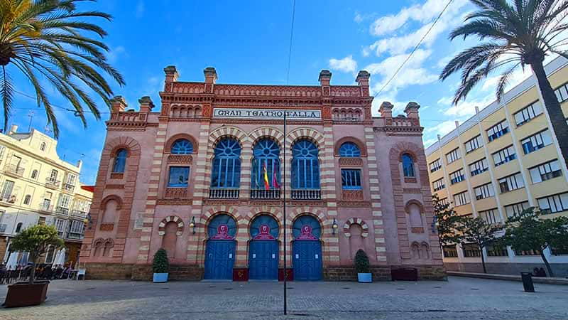
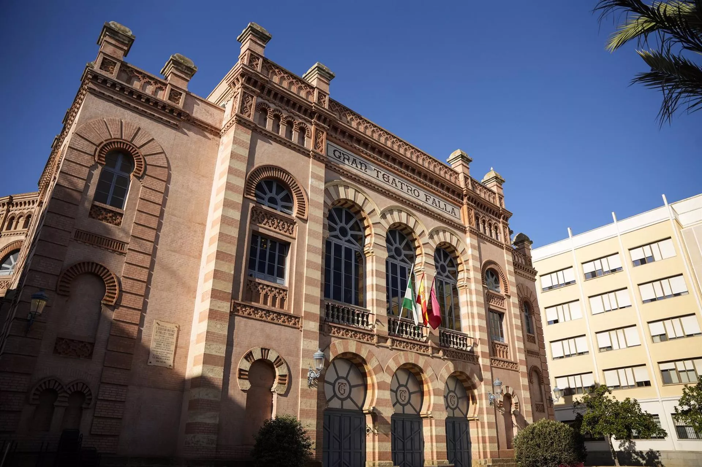
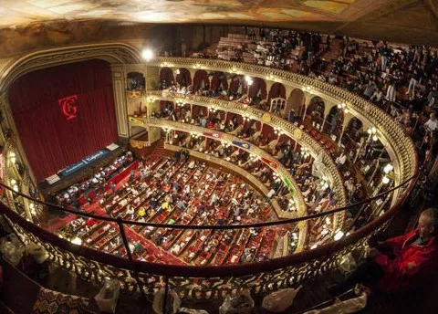
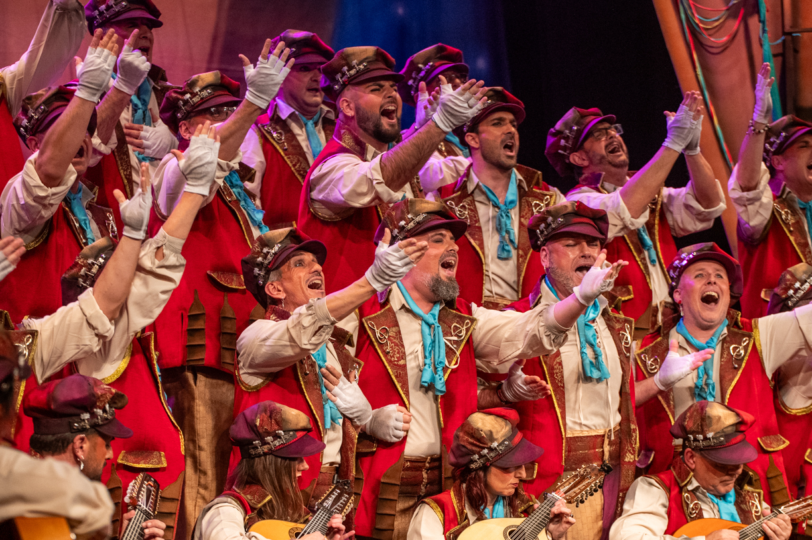
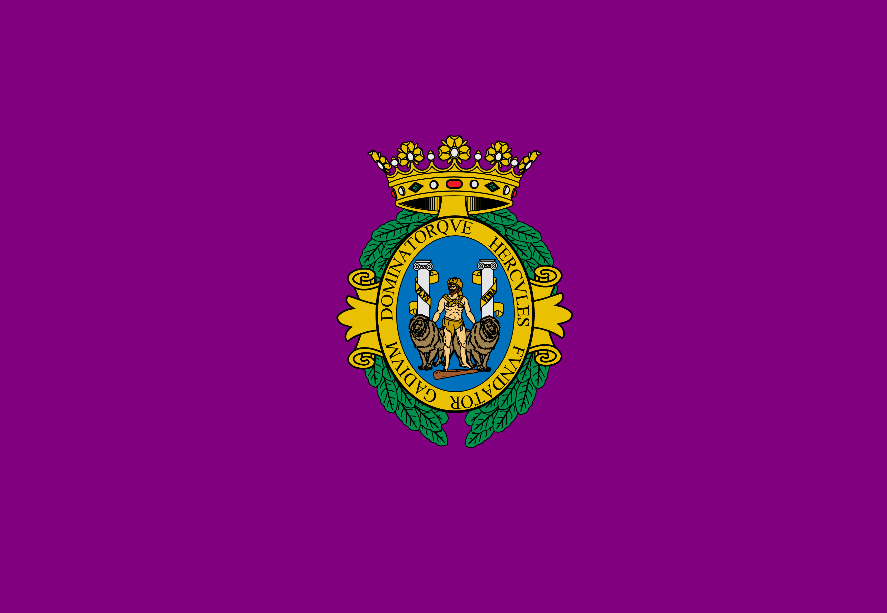

El Concurso Oficial de Agrupaciones Carnavalescas, conocido como COAC, es el evento más destacado del Carnaval de Cádiz y uno de los concursos de carnaval más importantes de España. Se celebra anualmente en el histórico Teatro Falla, un edificio emblemático de la ciudad que acoge a miles de espectadores cada temporada.

En el COAC participan las principales agrupaciones del Carnaval: chirigotas, comparsas, coros y cuartetos. Cada agrupación prepara un repertorio completo con letras ingeniosas, música y coreografías, que suelen reflejar la actualidad, la política, la sociedad o temas tradicionales gaditanos.

El concurso tiene varias fases: las preliminares, la fase de cuartos y semifinales, hasta llegar a la gran final, donde un jurado especializado evalúa la creatividad, la interpretación, la originalidad y la calidad musical de cada agrupación. Los premios se entregan a las mejores agrupaciones de cada categoría, y ganar el COAC se considera un gran honor para cualquier grupo.

Más allá de la competición, el COAC es un reflejo de la cultura gaditana, el ingenio y la crítica social a través del humor. Cada año, el teatro y las calles de Cádiz se llenan de espectadores y aficionados que disfrutan de las coplas, los disfraces y el espíritu festivo de esta fiesta única.

Además del concurso en el Teatro Falla, muchas agrupaciones participan en actuaciones callejeras, conocidas como “carruseles de coros”, donde el público puede ver de cerca la creatividad y el talento de los grupos. De esta manera, el COAC no solo es un concurso, sino un verdadero espectáculo que mantiene viva la tradición del Carnaval de Cádiz y atrae visitantes de toda España y el mundo.
